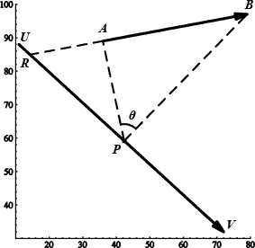

Home Page
F.A.Qs
Statistical Charts
Past Contests
Scheduled Contests
Award Contest
| Online Judge | Problem Set | Authors | Online Contests | User | ||||||
|---|---|---|---|---|---|---|---|---|---|---|
| Web Board Home Page F.A.Qs Statistical Charts | Current Contest Past Contests Scheduled Contests Award Contest | |||||||||
|
Language: Football Game
Description Football fans from NJU and PKU ACM-ICPC teams are going to have a football match, with frkstyc as the referee due to his incompetence in sports (and Ikki says, “This is the fact.”). But because they are unable to find enough men to build up two 11-player teams for a full match, they have decided on a modified version of penalty shootout! In a normal penalty shootout, the ball should always be put on the spot in the area before the taker tries his luck. Yet for these fans, this is far too unchallenging for the goalkeepers among them. Now the penalty takers are allowed more choices of positions for the ball – anywhere on a straight line segment that is chosen in advance. Players tend to carefully choose the point to place the ball so that the field angle spanned by the goal with respect to the ball is as large as possible, hoping to have a better chance in hitting the bottom of the net. In real situations, to make the angle really the largest one seems to be impossible, for man’s perception works seemingly better with fuzziness than accuracy. But for you, a contestant in programming, this would not be too difficult for you have the computer before your eyes as an aid, provided that you are given the exact descriptions of the goal and the line segment for placing the ball. Input The input contains multiple test cases. Each test case consists of a single line with the coordinates of four points A, B, U and V in the form All coordinates consist of nonnegative integers not exceeding 10,000. End of file (EOF) indicates the end of input. Output For each test case, you have to find a point P on the segment UV from which the goal AB is visible in the front such that the angle ∠APB is maximized. If such P does not exist, the answer is assumed to be 0. Output the angle in degrees accurate to the third digit beyond the decimal point. An error within 0.001° is allowed. Sample Input (36,89) (79,97) (11,88) (72,32) Sample Output 56.167 Hint Illustration of the sample test case:  BA is extended to intersect UV at R. When a ball placed somewhere on UR, it lies behind the goal, therefore this is disallowed. Alternatively, it can be placed anywhere on RV. Among all possible positions, P maximizes the angle ∠APB. The coordinates of P are roughly (42.3679, 59.1950). Source PKU Local 2007 (POJ Monthly--2007.04.28), frkstyc, text by Ikki | ||||||||||
[Submit] [Go Back] [Status] [Discuss]
All Rights Reserved 2003-2013 Ying Fuchen,Xu Pengcheng,Xie Di
Any problem, Please Contact Administrator